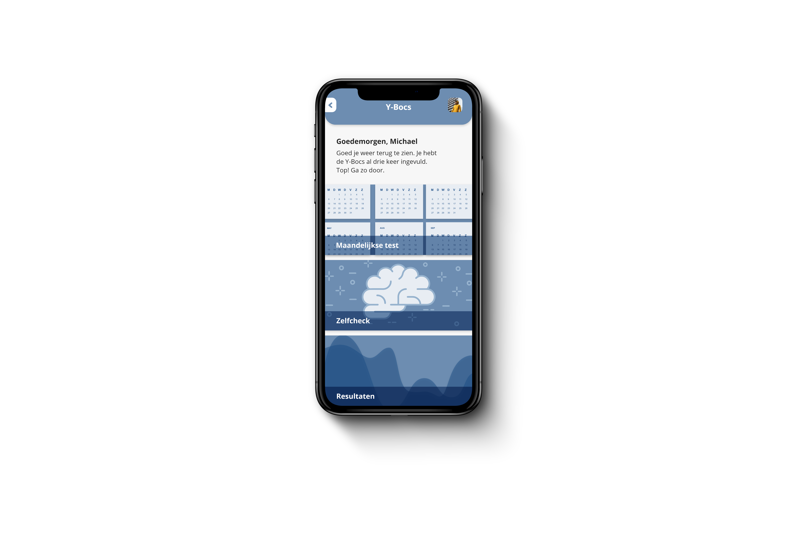
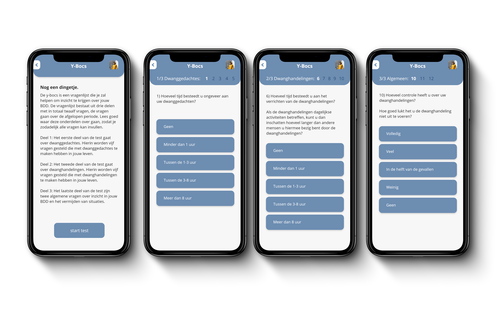
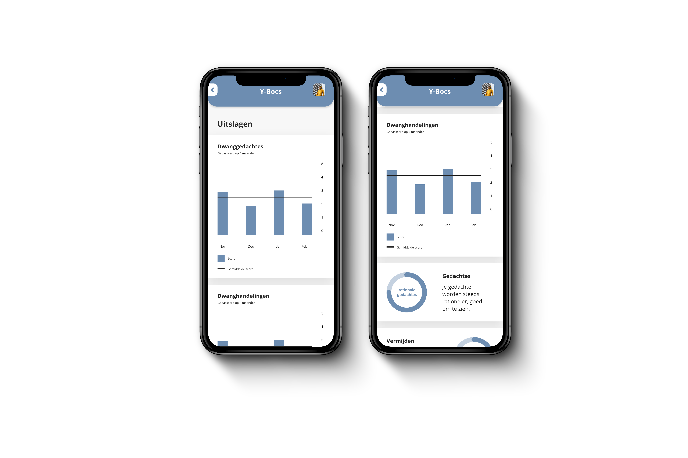

Portfolio/ My health diary
My health diary | 2017
Concept
My health diary is an application created with the UMC hospital(formerly knowns as AMC) during my time as a student at the Hogeschool van Amsterdam. It is an application for people who suffer with BDD, body dysmophic disoder, and have finished with their therapy. As a team we our concept was to create a place where people can share their experiences after therapy, with the emphasis on positivity, and filling in their monthly Y-Bocs test to keep track of their symptoms. I mostly focused on the creating a digital version of the Y-bocs, however I recreated the application to reflect current design trends and guidelines.
Target audience
As briefly mentioned above, this application is for people who suffer from BDD. Body dysmporhic disorder is a mental disorder in which people a person is preoccupied with an imagined physical defect or a minor defect that others often cannot see. This results in people seeing themselves as ugly and ovoid social exposure or even turn to plastic surgery to try and improve their perceived defect. The users of this application have all already been through therapy, and this application should be seen as a form of aftercare. At the moment, users have text-groups to stay in thouch with each other after therapy and share their experiences. They also get a test form to fill in every month to keep track of their symptoms.
User research
In collaboration with therapist at UMC we were allowed to interview patients, and test our concepts with them. We also interviewed the therapists to get a better view of what the do's and dont's were for this perticular user group. Unlike usual user groups, we had to balance the wishes of the patients with what the therpaists thought would be best for them. Because of the fact that the therapist had a better overview and understanding of the illnes. This application is a form of social media, however is should be noted that because of the nature of the users it users aren't free to post whatever they want. According the the therapists this could lead to a downward spiral in behaviour, something they would like to avoid with this application. The most important goal of the application is to give insight into the symptoms of the patient and make them aware of how they are doing after therapy.
User requirement list
A list of the user and product requirements that have been agreed by the therapists involved with the project.
- Users should be able to share things they have done.
- Users should be able to fill in the monthly Y-Bocs.
- Users should be able to see their test scores.
- Users should be able to fill in the test when they feel like checking their symptoms.
Concept screens
As mentioned above, my main focus during this project what digitising the Y-Bocs, however since I was recreating this look I also decided to give the entire application a new look and feel.
News feed

The news feed can be seen as the home screen of the application and shows the feed. Users can see what others have posted and react to that with a heart or a comment. The comment section of the post is managed with a script so user can't post negative comments. This is done due to the nature of the users.
The Y-Bocs
I chose to keep the options for the monthly test, 'zelfcheck' test and scores as one part to keep two distinguished parts of the application, the feed and the Y-Bocs. Users can choose to do the test or to look into their scores and gain insight into their symptoms.
The test
The Y-bocs test starts of with a reminder of the different sections of the application. This is seen if the user is new to the application or hasn't filled the test for over two months. The test has three different parts, I chose to show the name of the section and the number of the questions so users know where they are during the test. This provides them with inisight into the progression of the test and an overview of where they are.
Score
This is an example of a score overview, The scores are placed in five different graphs to make is easier to comprihent the results and see if the symptoms are getting better or worse.
Design